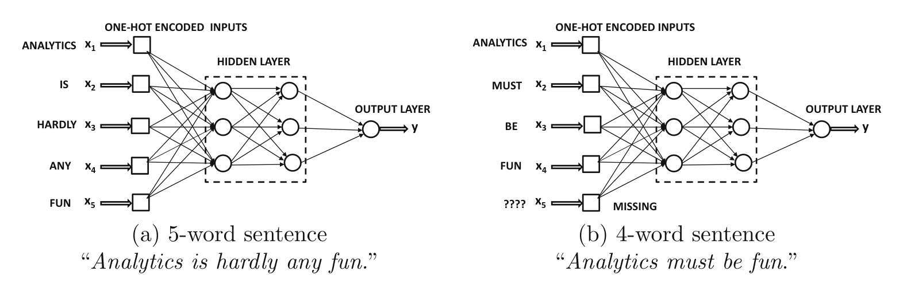
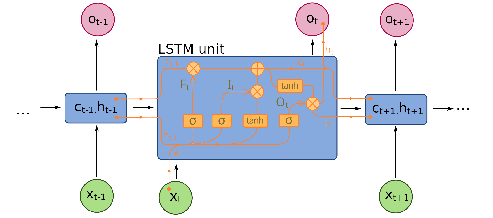
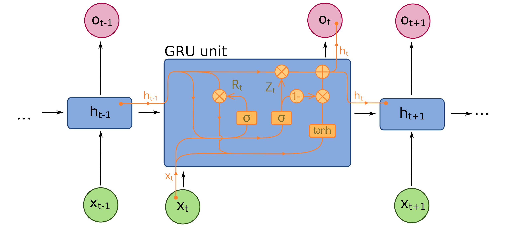

Úvod do neuronových sítí#
Perceptron#
Demo: https://playground.tensorflow.org/
TODO: nejaky jednoduchy priklad - viz demo ? + 1 jiny realny ?
TODO: zpusob trenovani NN !!
TODO: batche, ruzne optim., dropout, learning rate,
Konvoluční neuronové sítě#
Demo: https://cs.stanford.edu/people/karpathy/convnetjs/demo/mnist.html
TODO: zde asi jen vysvetleni, teorie, parametry..
One-hot-encoding#
VYSVĚTLIT !!
U MNISTU i RNN
Rekurentní neuronové sítě#
Motivace - sekvenční data, obsahující závislosti mezi sousedními prvky
Příklady - časově závislé sekvence, text
Příklad změny významu v textu:
The cat chased the mouse.
The mouse chased the cat.
Mění se délka sekvence - problém pro konvenční (feed-forward) NN architektury.
{kind=link}
Potřeba zakódovat informaci o pořadí slov (tokenů) přímo v architektuře neuronové sítě.
Rekurentní NN:
umožňují zpracovat vstup ve správném pořadí
ukládájí informaci o předcházejících vstupech
umožňují vkládat vstup různých délek
nekteré vstupy/výstupy můžou chybět - překlad řeči, klasifikace, atd..
Turing complete = umožňují simulovat libovolný algoritmus! (při poskytnutí dostatku dat..)
Backpropagation through time - RNN se učí opakovanou backpropagací v čase
{kind=link}
Dvě možnosti pro text:
word-level RNN - jako token/prvek volíme slovo
character-level RNN - jako token/prvek volíme znak
Word Embedding:
první vrstva přenáší (kóduje) slovo/token do vnitřní reprezentace RNN
po sobě jdoucí slova jsou zakódovany aktivací skrytých neuronů
One-hot encoding:
umožnuje reprezentovat slova/tokeny jako pravděpodobnosti
natrénovanou RNN lze škálovat - ovlivnit “jak moc si vymýšlí” nebo jak moc se řídí tím, co se naučila
Pokročilé rekurentní NN:
problém s explodujícími a mizejícími gradienty - čím je neuronová síť hlubší, tím náročnější je trénování a šíření sekvenční informace
dvě řešení:
LSTM - Long Short-Term Memory
GRU - Gated Recurrent Unit
LSTM
Jednoduché RNN si efektivně pamatují informaci pouze pro krátké řetězce (short-memory). LSTM architektura je vytvořená tak, aby prodloužila tuto “krátkou pamět” a umožnila efektivní učení vzájemných i pro dlouhé řetezce slov/tokenů. Je to dosaženo přidáním dalšího long-term skrytého stavu $c_t$ spolu s mechanismem pomalého zapomínání a přidávání nové informace.
{kind=link}
GRU
Podobná architektura jako LSTM, ale jiný mechanismus dlouhodobé paměti.
{kind=link}
Zdroje#
Aggarwal - Neural Networks and Deep Learning
https://eclass.upatras.gr/modules/document/file.php/EE935/%CE%97%CE%BB%CE%B5%CE%BA%CF%84%CF%81%CE%BF%CE%BD%CE%B9%CE%BA%CE%AC%20%CE%92%CE%B9%CE%B2%CE%BB%CE%AF%CE%B1/2018_Book_NeuralNetworksAndDeepLearning.pdf
Kam dál?#
https://cs.stanford.edu/people/karpathy/convnetjs/